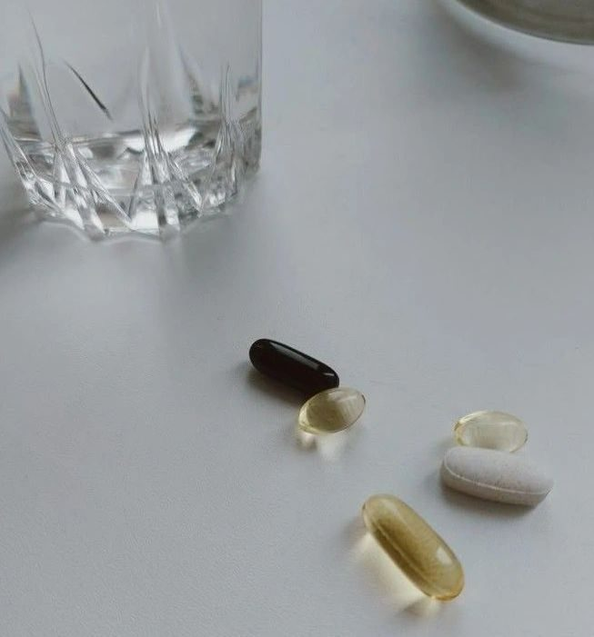

What to Take Together & How to Read Labels
If you’re investing in supplements, you want to make sure your body is actually using them — not just passing them through. The truth is, the right combinations can dramatically improve absorption, while the wrong ones can compete with each other or even cancel each other out.
And then there’s the supplement label itself… full of tiny text, strange words, and marketing fluff. But once you know what to look for, you can easily spot a high-quality supplement from a not-so-great one.
Let’s break it all down in a friendly, professional, and totally approachable way.
Why Combining Supplements Matters
Nutrients don’t work in isolation — your body is beautifully designed for synergy. Some vitamins enhance the absorption of minerals, certain fats improve the uptake of fat-soluble nutrients, and enzymes can make everything easier to digest.
Knowing the right combos means:
- Better nutrient absorption
- Better results from your routine
- Less money wasted
- Less guesswork
Top Supplement Pairings for Better Absorption
1. Vitamin D + Vitamin K2 (the synergy for bones & hormones)
These two are best friends.
- Vitamin D3 increases calcium absorption.
- Vitamin K2 (MK-7) directs calcium into the bones and away from arteries.
Why take together:
Better bone density, cardiovascular protection, improved hormonal health, and enhanced immune support.
Look for:
- D3 (not D2)
- K2 in MK-7 form
- Oil-based capsules for better absorption
2. Magnesium + B6 (calming, hormonal balance, and energy)
This is an all-time classic combo.
Why they pair well:
- B6 boosts magnesium absorption.
- Together they support PMS relief, stress management, sleep, muscle recovery, and energy production.
Best forms:
- Magnesium glycinate (calming)
- Magnesium malate (energy)
- P5P (active B6)
3. Iron + Vitamin C (for better absorption & less stomach upset)
If you struggle with fatigue, cold hands, thinning hair, or heavy cycles, this combo might be for you.
How they work together:
Vitamin C significantly increases non-heme iron absorption.
Important tips:
- Take iron on an empty stomach (if tolerated).
- Avoid coffee, tea, calcium, and high-fiber foods 1–2 hours around your dose.
- Look for iron bisglycinate — gentle and effective.
4. Omega-3 + Vitamin E (for oxidation protection)
Omega-3s are incredible for brain health, inflammation, skin, and hormones — but they’re fragile. They oxidize easily.
Vitamin E acts as a natural antioxidant, protecting the oils so you’re getting full benefits.
What to look for:
- Triglyceride form of omega-3 (better absorbed than ethyl ester)
- Natural vitamin E (d-alpha tocopherol), not synthetic (dl-alpha)
5. Zinc + Copper (the balancing act)
Zinc is amazing for immunity, hormones, skin, and gut health — BUT it can deplete copper if taken long term.
Best ratio:
Usually 15 mg zinc to 1–2 mg copper
OR look for a balanced complex containing both.
Forms that absorb well:
- Zinc picolinate
- Zinc bisglycinate
- Copper glycinate
6. Turmeric (Curcumin) + Black Pepper (Piperine)
Curcumin is powerful… but poorly absorbed on its own. Curcumin is one of the most extensively researched natural anti-inflammatory compounds. With black pepper, it reaches the bloodstream more effectively.
Piperine increases absorption up to 20x.
Look for:
- “Curcumin + black pepper extract (piperine)”
- Or “liposomal curcumin” for even better absorption
7. Probiotics + Prebiotics (gut health dream team)
Probiotics add beneficial bacteria.
Prebiotics feed the bacteria.
Together → better digestion, immunity, mental clarity, inflammation reduction, and hormone detox.
Look for:
- Multiple strains (Lacto + Bifido)
- At least 10–20 billion CFU
- Prebiotic fibers like inulin, FOS, or GOS
8. Vitamin A + Zinc (skin, immunity, hormones)
Zinc is required for the transport of vitamin A.
Without zinc, vitamin A can’t do its job effectively.
This combination supports:
- Clearer skin
- Stronger immunity
- Hormone balance
- Better vision
9. Calcium + Magnesium (when taken in the right ratio)
These two can work beautifully together if balanced correctly.
Ideal ratio:
- 2:1 calcium to magnesium
OR
- 1:1 for women with stress, PMS, or constipation
Avoid taking with iron—they compete for absorption.
What to Look for on a High-Quality Supplement Label
This is where people either get overwhelmed or skip reading it altogether. But once you know what matters, it’s simple.
1. Look at the FORM of the nutrient — it matters.
Some forms absorb well; others do not.
Best forms to look for:
- Magnesium: glycinate, malate, threonate
- Zinc: picolinate, bisglycinate
- B12: methylcobalamin or adenosylcobalamin
- Folate: methylated folate (NOT folic acid, especially for women with MTHFR)
- Vitamin E: natural “d-alpha,” not synthetic “dl-alpha”
- Iron: bisglycinate (gentle)
2. Check for fillers, additives, and dyes
Avoid supplements with:
- Artificial dyes
- Titanium dioxide
- Hydrogenated oils
- Synthetic preservatives
- “Proprietary blends” (they hide dosing)
3. Look for third-party testing
This is HUGE and instantly separates high-quality brands from low-quality ones.
Look for labels like:
- NSF Certified
- USP Verified
- Informed Choice
- cGMP facility
These ensure purity, potency, and safety.
4. Check if it’s in a form your body can actually use
Are the nutrients:
- Methylated?
- Chelated?
- In liposomal form?
- Oil-based when needed (e.g., vitamins A, D, E, K)?
These small details lead to better absorption and better results.
How to Combine Supplements Throughout the Day
A simple guide:
Morning
- Vitamin D + K2
- Magnesium malate
- Probiotic (if not refrigerated strains requiring PM)
With Meals
- Omega-3 + Vitamin E
- Curcumin + piperine
- Multivitamin
Afternoon
- B-complex
- Zinc + copper (if taking separately)
Evening
- Magnesium glycinate
- Iron + Vitamin C (if needed)
Supplements can be an incredible tool for supporting hormone balance, gut health, energy, skin, and overall longevity — as long as your body is actually absorbing them.
Understanding the right combinations and what a quality label looks like helps you invest wisely, protect your health, and get real results.
If you want to take your health to the next level, book your FREE 30-minute Wellness Transformation call with me! Click Here